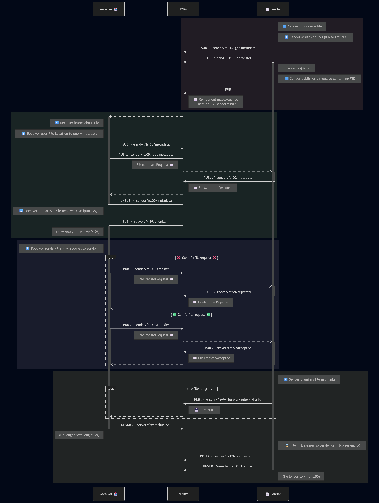

SmarterLink File Transfer Protocol
Files that need to be shared between participants are best served through a Data Store participant: the sender uploads the file to the Data Store, then publishes a SmarterLink event carrying a Location URI pointing to it. Receivers fetch the file independently and at their own pace, keeping interactions decoupled and asynchronous.
This document describes an alternative protocol for transferring files directly over MQTT. It should only be used when no Data Store is available in the deployment, or when the use case genuinely requires a synchronous point-to-point transfer.
Design Principles
- Files may exceed the broker's maximum message size, so they are split into chunks and reassembled by the receiver.
- Chunk size is negotiated per transfer so that participants with limited buffer capacity are accommodated.
- Senders may serve multiple files concurrently using locally unique File Send Descriptors.
- Receivers may receive multiple files concurrently using locally unique File Receive Descriptors.
- No MQTT 5 features are used, ensuring compatibility with a wide range of brokers.
- Integrity verification via hashing is optional, to accommodate low-resource devices that cannot perform hashing. SHA-256 is preferred when hashing is used.
Hashing
Hashing is optional. Some participants (particularly low-resource embedded devices) may not have the processing capacity to compute hashes, and the protocol accommodates this.
Two hashing functions are officially supported:
| Function | Identifier | Notes |
|---|---|---|
| SHA-256 | SHA-256 |
Preferred |
| MD5 | MD5 |
Supported |
Other hashing functions may be used if both the sender and receiver support them. Senders advertise their supported functions in MetadataResponse. Receivers select from that list when constructing a TransferRequest. A sender MUST reject a TransferRequest that specifies an algorithm it does not support.
Descriptors
File Send Descriptor (FSD): A named handle assigned by the sender to a file it is serving. Takes the form fs:<id>, where <id> is locally unique to the sender participant. Multiple FSDs may be active concurrently.
File Receive Descriptor (FRD): A named handle assigned by the receiver to manage an incoming transfer. Takes the form fr:<id>, where <id> is locally unique to the receiver participant. Multiple FRDs may be active concurrently.
File Location URI
When a sender produces a file it advertises it by embedding a File Location URI in a SmarterLink event payload (e.g. componentImageAcquired). The URI encodes the full MQTT topic of the FSD using the smarterlink:// scheme:
smarterlink://<full-mqtt-topic-of-the-fsd>
Example: A Data Producer with participant ID cam-01 at station station-a in area-1 / sub-1 / site-x, serving FSD fs:00:
smarterlink://smarter-link/site-x/area-1/sub-1/station-a/producers/~cam-01/fs:00
Receivers strip the smarterlink:// prefix and use the remainder as the MQTT topic root when constructing all FSD request and response topics.
Transfer Flow
Example

Topics
| Topic | Publisher | Payload |
|---|---|---|
<fsd>/.get-metadata |
Receiver | MetadataRequest |
<fsd>/metadata |
Sender | MetadataResponse |
<fsd>/.transfer |
Receiver | TransferRequest |
<frd>/accepted |
Sender | TransferAccepted |
<frd>/rejected |
Sender | TransferRejected |
<frd>/chunks/<index>-<hash> |
Sender | Raw binary |
Topics prefixed with . are request topics: a participant publishes to them and expects a response on the corresponding non-dotted topic.
| Request topic | Response topic |
|---|---|
<fsd>/.get-metadata |
<fsd>/metadata |
<fsd>/.transfer |
<frd>/accepted or <frd>/rejected |
Payloads
All negotiation payloads use the standard SmarterLink JSON envelope.
MetadataRequest
No fields beyond version. The receiver publishes this to request file metadata from the sender.
MetadataResponse
| Field | Type | Required | Description |
|---|---|---|---|
version |
integer | yes | |
filename |
string | no | Original filename, if known |
size |
integer | yes | Total file size in bytes |
ttl |
integer | no | Seconds the sender will continue serving this FSD. Expiry prevents new transfers from starting but does not abort a transfer already in progress. |
maxSupportedChunkSize |
integer | no | Maximum chunk size in bytes the sender can produce. Receivers MUST NOT request a larger chunk size. |
supportedHashFunctions |
string[] | yes | Hashing function identifiers supported by the sender. May be empty if the sender cannot perform hashing. |
TransferRequest
| Field | Type | Required | Description |
|---|---|---|---|
version |
integer | yes | |
responseTopicBase |
string | yes | Full MQTT topic base of the receiver's FRD (used as <frd> in all response and chunk topics) |
chunkSize |
integer | yes | Requested chunk size in bytes |
hashingFunction |
string | no | Hashing function to use for per-chunk and whole-file integrity verification. This can be included when the sender advertises any supported functions. If omitted, no hashing is performed. |
startChunkIndex |
integer | no | Zero-based index of the first chunk to send (default: 0). Used to resume an interrupted transfer. |
chunkCount |
integer | no | Number of chunks to send. If absent, all chunks from startChunkIndex to end of file are sent. |
TransferRejected
| Field | Type | Required | Description |
|---|---|---|---|
version |
integer | yes | |
reason |
string | yes | Human-readable description of why the request was rejected (e.g. "unsupported chunk size", "FSD expired") |
TransferAccepted
| Field | Type | Required | Description |
|---|---|---|---|
version |
integer | yes | |
hashes |
Hash[] | yes | Whole-file hash(es). Must include an entry for the algorithm specified in TransferRequest.hashingFunction, if one was provided. May include additional algorithms. Empty array if no hashing function was requested. |
Hash object:
| Field | Type | Required | Description |
|---|---|---|---|
hashingFunction |
string | yes | The algorithm identifier (e.g. SHA-256, MD5) |
value |
string | yes | Lowercase hex-encoded hash value |
File Chunks
Each chunk is published as raw binary (no JSON envelope) to:
<frd>/chunks/<index>-<hash>
where <index> is the zero-based chunk index and <hash> is the lowercase hex-encoded hash of that chunk's bytes using the algorithm from TransferRequest.hashingFunction. If no hashing function was requested, <hash> is an empty string and the topic ends with -.
When hashing is in use, receivers are advised to verify the per-chunk hash and discard any chunk whose hash does not match. Discarded chunks can be re-fetched by issuing a new TransferRequest to the same FSD, using startChunkIndex and chunkCount to target only the missing chunks.
End-of-Transfer Detection
End of transfer is implicit. The receiver computes the expected chunk count from the information exchanged during negotiation:
expectedChunks = ⌈size / chunkSize⌉
adjusted by startChunkIndex and chunkCount from the TransferRequest if present. The transfer is complete when all expected chunks have been received. When hashing is in use, receivers are advised to verify the reassembled file against the whole-file hash provided in TransferAccepted.
Chunk Publishing
Senders MUST publish chunks in sequential index order. Receivers MUST tolerate out-of-order delivery, as sequential delivery is not guaranteed by the broker.
Senders SHOULD rate-limit chunk publishing to avoid saturating the broker. No specific rate is mandated; implementations should make the limit configurable.